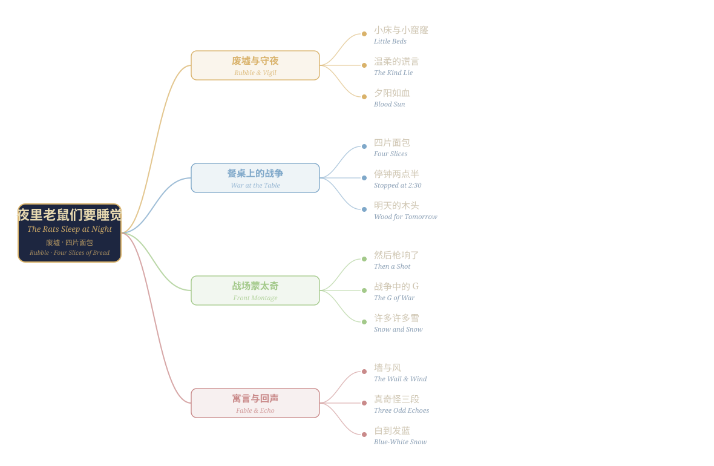

夜里老鼠们要睡觉
〇 · 书籍信息
基本信息
| 书名 | 《夜里老鼠们要睡觉》——博尔歇特短篇小说集，收录《面包》《在这个星期二》《厨房钟》《明天用的木头》《墙》《夜里老鼠们要睡觉》《许多许多雪》《三个黑色国王》等四十篇 |
|---|---|
| 作者 | 博尔歇特（1921–1947），汉堡人：被征入国防军、两度负伤、因「危害国防军言论」两次入狱——战后一年内写下全部作品，二十六岁死于战伤后遗症。主要剧本《大门之外》成为德国「废墟文学」的宣言 |
| 篇幅 | 全书多为千字短章：一页纸写一场战争——德语文学最著名的「零度写作」样本：句子短、动词冷、判决全部藏在名词里 |
| 体裁 | 微型小说与散文诗：废墟儿童（尤尔根）· 家庭餐桌（面包夫妇）· 战场蒙太奇（黑塞上尉）· 拟人寓言（墙与风） |
| 一句话 | 他只活了二十六岁，却用一个「夜里老鼠都睡觉」的谎言，替一个全是废墟的国家哄好了下一代 |
一 · 核心主题总览
四十篇短章之下，是四组互相咬合的母题：① 零度写作（句子承担一切）
《在这个星期二》全篇靠主谓宾推进：「然后枪响了。」五个字就是一场死亡——博尔歇特把形容词用到接近于零，让名词自己发光：担架、除虱所、一千四百张床——判决书由名词写成。
② 废墟里的儿童视角
《夜里老鼠们要睡觉》：九岁的尤尔根守着埋有四岁弟弟的废墟，一个陌生男人用一个温柔的谎言（夜里老鼠要睡觉，你可以回家了）把他从瓦砾上领走——战后的第一道德不是真相，是让孩子今晚能睡。
③ 餐桌上的战争
《面包》《厨房钟》《明天用的木头》：战争从不进厨房，只让丈夫半夜偷吃面包、让钟停在两点半、让母亲念叨肥皂粉——最大的灾难用最小的日常计量，这是本书全部的方法论。
④ 紫罗兰色（战争的颜色）
《他也因为战争很不愉快》把整场战争涂成紫罗兰色：黄昏、枪管、办公室的墨水渍——颜色承担了形容词的职能：色温即情绪，这是零度写作的另一只手。
二 · 第一段 废墟与守夜 · 夜里老鼠们要睡觉—— 一个谎言 · 一场救赎 ——
守卫废墟的九岁男孩
「孤零零的墙上，一个空旷的窗洞，像在打哈欠。」尤尔根在一块瓦砾堆里守了一整天——木棍、半块面包、铁皮盒子。一个提篮子的男人过来搭话，男孩死守秘密：「我要看守着这里。」全篇的悬念不是男孩守什么，是男人多久能猜到：他猜兔子草、猜钱，男孩一一否认——直到男孩自己说出口：「我弟弟，他就在这下面。」四岁，炸弹下来的那天夜里，灯灭了，他也没了。
◆ 语言学习 · 德语关键词 · 废墟
| Trümmerfrau / 废墟 | 战后德国的日常景观——「废墟文学」（Trümmerliteratur）因这类景观得名：文学的任务是把瓦砾写成道德 |
|---|---|
| Hase / 兔子草 | 男人篮子里的道具——两个陌生人之间需要一件无害的小东西做桥 |
一个温柔的谎言
男人听完，沉默片刻，说：「那，你们老师没告诉你们，夜里老鼠们要睡觉吗？」——老鼠夜里睡觉，所以夜里死人不安全这种事不会发生，所以你可以回家睡觉了。这是全书最著名的一个句子级发明：用一个孩子的逻辑能接受的小前提，覆盖一个他扛不动的大恐怖。男孩信了——或者选择信了：「如果它们夜里真的睡觉的话。」
◆ 语言学习 · 修辞 · 谎言
| 卷铺盖卷 | 男人补的那句玩笑——让谎言长出幽默的边角：温柔如果不带一点滑稽，孩子会立刻识破 |
|---|---|
| 白色的兔子 | 男人开的空头支票——它不需要兑现，它的功能是给男孩一个明天 |
夕阳如血：小床与小窟窿
等人的间隙，「尤尔根用棍子在废墟中戳着一个个小窟窿。这里都是小床，他想，都是小床。」——四岁弟弟睡过的地方，现在全是瓦砾的小窟窿。结尾男人的罗圈腿走向夕阳：「透过那双极其罗圈的腿，尤尔根看到夕阳如血」——全篇没有一处出现「战争」「死亡」「悲伤」这些词，而每个词都到了。
◆ 语言学习 · 意象 · 光
| 小床 | 废墟的儿童重命名法——把坟场读成卧室：儿童视角是废墟文学的唯一解药 |
|---|---|
| 夕阳如血 | 唯一直白的意象——放在罗圈腿之间：血色被最滑稽的身体形状框住，恐怖反而更完整 |
三 · 第二段 餐桌上的战争 · 面包 · 厨房钟—— 两点半 · 四片面包 ——
面包：凌晨两点半的咀嚼声
「面包她突然醒了。这是凌晨两点半。」丈夫半夜偷吃面包（配给制下的口粮是全家的命），妻子在厨房抓了个正着——他撒谎说听到动静，她成全他的谎言。结尾第二天傍晚，她在他盘子里放了四片面包：「我不怎么受得了这种面包。你多吃一片吧。」她看见他把脸深深埋在盘子里，头都不抬一下。全篇没写一个「饿」字——配给、尊严、夫妻四十年，全在一片面包的增减里。
◆ 语言学习 · 历史关键词 · 配给
| 配给制 | 战后德国每人每日口粮有定量——面包是全家的账本：多吃一片就是拿别人的份额 |
|---|---|
| 面包屑 | 罪证的全部——桌布上散落的屑比指纹更诚实：侦探小说中最小的一枚物证 |
厨房钟：停在两点半
一个失去一切的男人逢人就展示那只烧剩的厨房钟——「它停在了两点半。」旁人立刻用标准叙事收编他：您家肯定是两点半被炸的，炸弹落下钟表就停。他断然拒绝：「这跟炸弹毫无关系。」两点半是他夜里回家、母亲光着脚给他热晚饭的时刻——钟记住的不是灾难，是「又这么晚」。博尔歇特用一篇纸完成对「受害者叙事」的整个抵抗：灾难不许夺走我对灾难的私人定义权。
◆ 语言学习 · 修辞 · 反叙事
| 冲击力停表 | 旁人的标准解释——公共叙事总想接管私人记忆：这是全篇真正的敌人 |
|---|---|
| 又这么晚 | 母亲的全部台词——三个字承担了母爱的全部音量：博尔歇特的台词学是减法 |
句型 ｜ 「不是四点一刻或者是七点。」——精确到不必要的时间点，是记忆最深处的证据：写作中「多余的精确」永远比概括更动人。
明天用的木头：二十二马克与一级台阶
一个决定上顶楼自杀的男人，在楼梯扶手前停住：十一岁的他用锉刀刻下的那条白线还在。「现在我想结束生命，而我几乎把这件事给忘了。」他掏出二十二马克写好补偿字条——正要上去，楼下的门开了：母亲在喊，「那个小伙子专门开车去拉木头，这样我们明天就可以洗东西了……我们的小伙子。」他转身下楼梯：「是的，我得去拉木头。为了我们。为了明天。我们的木头。」——救他的不是道理，是一句日常家务的指派：被需要，是唯一比绝望更响的声音。
◆ 语言学习 · 心理关键词
| 锉刀刻痕 | 十一岁的罪——救赎的悖论：让他想死的孤独，恰好要靠一段「不光彩的记忆」来稀释 |
|---|---|
| 肥皂粉 | 明天洗东西用的——家务的琐碎即生命的证据：绝望最怕日历上还排着事情 |
四 · 第三段 战场蒙太奇 · 在这个星期二—— 五个字 · 一场死 ——
黑塞上尉：然后枪响了
《在这个星期二》用蒙太奇剪一个上尉的死：前线（艾勒斯摘下红围巾点烟——「然后枪响了。」）· 后方（太太举着信：「他当上上尉了。上尉兼中队长。」）· 医院（体温41.6，脉搏116，无意识）· 每周三的《魔笛》（黑塞太太涂了红嘴唇）。四条线在同一句式「在这个星期二」上并轨，没有一句煽情——全篇最重的一句出自一个病友：「为什么他们不能把死人轻轻放下呢。」
◆ 语言学习 · 德语关键词 · 蒙太奇
| 在这个星期二 | refrain 式的回环句——重复不是修辞，是时间轴：让四条生死线在同一格刻度上并轨 |
|---|---|
| 除虱所 | 战地医院的日常——死亡先经过卫生程序：官僚机器的细节是战争文学最冷的证词 |
乌拉：战争中的 G
与黑塞线并轨的是小学课堂：女教师教大写字母——「战争中，所有父亲都是士兵。」乌拉把「战争」（Krieg）写成了「爬行」（Kriech），被罚抄写。结尾乌拉在练习本上把这句话写了十遍：「战争中的G，是Grube（坑道）的G」——她没写错，她只是把战争拼成了它真正的样子：坑道、爬行、埋人。博尔歇特用一个小学生的拼写错误完成了对官方语言的全篇控诉。
◆ 语言学习 · 语言关键词
| Krieg / Kriech | 战争与爬行——一词之差是全篇的核心：谁规定战争不是爬行？官方词典还是埋人的坑道 |
|---|---|
| Grube | 坑道——军事用语里最接近坟墓的一个词：G 是它的开头，也是结尾 |
许多许多雪 · 三个黑色国王 · 拉迪
前线小品三枚：《许多许多雪》里机枪手在雪地里唱圣诞歌——「他唱着圣诞歌曲，而现在已……」歌声与枪管同框；《三个黑色国王》里三个士兵摸索过黑暗城郊——三王来朝的 Bethlehem 变成废墟的城郊；《拉迪》写一个笑脸男孩的死亡——三篇共用的方法：把神圣叙事（圣诞、三王、天使）平移进战场，让宗教符号替战争记账。
◆ 语言学习 · 修辞 · 移位
| 圣诞歌 | 机枪手唱的——神圣时间与战争时间叠在同一片雪地上：博尔歇特式的反讽从不评论，只并置 |
|---|---|
| 三个黑色国王 | 东方三博士的战场化——礼物变成了搜刮：神话的平移即批判 |
五 · 第四段 寓言与回声 · 墙 · 真奇怪—— 风挑唆 · 墙殉情 ——
墙：被遗忘者最后的死亡
拟人寓言《墙》：老墙孑然独立，年轻的风来挑唆——「报仇——风在低语。」「倒下——风的私语充满了魅惑。」墙动了心，倾倒的瞬间却看见脚下那些「不知感恩的、健忘的和不忠的人儿」——它忘记仇恨，「因为它终究爱着这些人」。风补上一脚，墙砸死了一个老妇、两个儿童和一个刚从战场回来的年轻人。墙的最后一句是：「为什么？我还爱着他们！」——博尔歇特把「被时代抛弃者」的全部悲剧写成一篇寓言：被抛弃者连殉葬都带着错爱。
◆ 语言学习 · 寓言关键词
| 风 | 全篇的煽动者——「它没有心，这古老又年轻的风」：时代力量的具象，挑唆是它的呼吸方式 |
|---|---|
| 永不消亡的爱 | 墙的墓志铭——也是全书书名的暗线：爱与毁灭用同一个动作完成 |
真奇怪：教育与战争的三段互文
三段微型互文：战时，「部队的司令总让我想起我的教育参议」；战后，「教育参议总让我想起我的部队的司令」；第三段参议自己说：「每当我看见高年级学生入伍，都要想起我的部队」。三个「真奇怪」完成一次教育批判的闭环：学校与军队互为镜像——教你站直的那套东西，和教你卧倒的那套东西，是同一套。
◆ 语言学习 · 修辞 · 镜像
| 真奇怪 | 三段共用的开头——礼貌的困惑语气承担了全部控诉：德语的反讽传统里，惊讶即判决 |
|---|---|
| 入伍 | 教育的下游——参议的「想起」是制度自觉的一瞬：博尔歇特只给这一瞬，不给结论 |
我那苍白的兄弟 · 玛利亚，一切都是玛利亚
《我那苍白的兄弟》写雪：「还没有什么像这雪一样白。白到几乎发蓝。」雪把一切埋成平等——兄弟、敌人、武器；《玛利亚，一切都是玛利亚》写牢房里一个被戏弄的名字与士兵的乡愁——收束全书的两篇共同宣告博尔歇特的底色：在零度句法里，温柔不是修辞，是唯一的幸存物。
◆ 语言学习 · 色彩关键词
| 白到发蓝 | 雪的色阶——零度写作的颜色学：颜色承担情绪，形容词省下的一切由名词的色相偿还 |
|---|---|
| 玛利亚 | 母亲与圣母的重名——乡愁与宗教共用一个名字：战争年代的神学全部浓缩在此 |
六 · 人物图鉴与成长弧线—— 主角配角 · 一张表看穿 ——
主要人物
尤尔根——九岁的守夜人——木棍、半块面包和一个四岁的弟弟；他得到了一只不会兑现的白兔子
面包夫妇——结婚三十九年——凌晨两点半的一场面包案，结尾多出的一片面包是全书最贵的爱
黑塞上尉——爱笑的新任上尉——他的死被五个字完成：然后枪响了
乌拉——写错「战争」的小学生——她把 Krieg 写成 Kriech，罚抄十遍，一遍没错
厨房钟的男人——失去一切的人——拒绝让炸弹接管他的两点半
次要人物（功能位）
| 提篮子的男人 | 罗圈腿、兔子草——废墟上唯一的成人善意，一个谎言的作者 |
|---|---|
| 母亲们 | 「又这么晚」／「明天要用的木头」——博尔歇特笔下的母亲只说家务，家务即活着的证据 |
| 女教师 | 厚镜片、记分册——官方语言的执行者：她不知道 G 也是坑道的 G |
| 护士伊丽莎白 | 「如果没有上帝，我们根本支撑不住」——被一句台词留在战场 |
| 年轻的风 | 墙的挑唆者——「它没有心」：全书唯一的反派，且从不露面 |
七 · 主题与象征—— 每个道具都在说话 ——
| 罗圈腿 | 成人的温柔谎——最滑稽的身体形状，承担最重的救赎任务 |
|---|---|
| 四片面包 | 爱的配额——从三片到四片：多出的一片比任何情书都重 |
| 两点半 | 私人的时间主权——炸弹能停表，停不掉记忆的定义权 |
| 紫罗兰色 | 战争的颜色——黄昏、枪管、墨水渍共用的色温 |
| 墙 | 被遗忘的建设者——它的死亡同时是殉情与误杀：时代的抛弃与爱的惯性 |
| 雪 | 平等的覆盖物——白到发蓝：它把兄弟与敌人埋进同一种安静 |
八 · 写作手法赏析—— 怎么写，就能怎么学 ——
① 零度句法
短句、主动词、零形容词堆叠——「然后枪响了。」五个字完成一场死亡。博尔歇特证明：句子越冷，读者越烫。
② 对话去引号
原作与译本通篇不用引号——对话与叙述同质化：没有引号的对话是无法被隔离的证词——每句话都直接砸在读者脸上。
③ 日常计量法
战争从不直接出场：一片面包、一只钟、一袋肥皂粉、一车木头——把最大的灾难写进最小的日常，是本集可复制的方法论。
④ 回环 refrain
「在这个星期二」「这就够了」「总是两点半」——重复句当铁轨：多条叙事线在同一句式上并轨，最后一格齐齐撞进结尾。
九 · 名段欣赏—— 原文精读 · 逐段赏析 ——
十 · 金句摘录—— 13 条 · 中英对照 · 带出处 ——
"孤零零的墙上，一个空旷的窗洞，像在打哈欠，在夕阳的背景下，充满了蓝紫色。"—— 夜里老鼠们要睡觉
"那，你们老师没告诉你们，夜里老鼠们要睡觉吗？"—— 夜里老鼠们要睡觉
"尤尔根用棍子在废墟中戳着一个个小窟窿。这里都是小床，他想，都是小床。"—— 夜里老鼠们要睡觉
"她突然醒了。这是凌晨两点半。"—— 面包
"我不怎么受得了这种面包。你多吃一片吧。"—— 面包 · 结尾
"每星期有一个星期二。每年有五十个星期二。一场战争中有许多星期二。"—— 在这个星期二
"然后枪响了。"—— 在这个星期二
"为什么他们不能把死人轻轻放下呢。"—— 在这个星期二
"生活，他不曾理解，生活里的他，也不曾被人理解。"—— 明天用的木头
"是的，我得去拉木头。为了我们。为了明天。我们的木头。"—— 明天用的木头 · 结尾
"最后只剩下了风。当一切都不复存在，眼泪、饥饿、马达和音乐，还有风。"—— 墙
"我孤独。我毫无意义。我死了——"—— 墙 · 老墙
"还没有什么像这雪一样白。白到几乎发蓝。"—— 我那苍白的兄弟
十一 · 拓展阅读—— 原文 · 词条 · 译文 ——
原文与文本
- Wolfgang Borchert — Wikipedia —— 生平、两度入狱与《大门之外》的首演史
- The Man Outside — Wikipedia —— 《大门之外》（Draußen vor der Tür）——废墟文学的宣言剧本
谱系与概念
- Trümmerliteratur — Wikipedia —— 废墟文学/废墟电影：1945–50 德语文学的清算时刻
- Short story — Wikipedia —— 微型小说的技术谱系：博尔歇特与海明威的极简对照
十二 · 个人感悟与心得—— 三点心得 ——
小床 · 四片面包 · 两点半
① 最小的日常是最大的度量衡
博尔歇特全部方法论一句话：不写战场写餐桌。当你想写任何宏大题目（战争、时代、破产）时，先找到那片「多出来的面包」——计量单位越小，读者被击中越深。
② 零度句法的温度
短句不是冷漠，是把温度让渡给名词：小床、兔子草、两点半。删形容词删到心疼时，别忘了名词会自己发烧——这正是「然后枪响了」五个字能压一整章的原因。
③ 被需要是唯一比绝望更响的声音
《明天用的木头》的救赎不是道理不是爱情，是一车家务用的木头。陪伴绝望中的人，最有效的不是开导，是给他一件明天必须做的事——哪怕只是提醒他别忘带肥皂粉。
—— 博尔歇特死于 1947 年 11 月 20 日，病床边放着《大门之外》的报纸首演好评。剧院第二天照常上演，观众席空着一把椅子。
十三 · 一页速查（复习用）
| 全书骨架 | 40 篇四组：废墟儿童（夜里老鼠）· 餐桌战争（面包/厨房钟/木头）· 战场蒙太奇（星期二）· 寓言回声（墙/真奇怪） |
|---|---|
| 核心命题 | 最大的灾难用最小的日常计量；零度句法里名词自己发烧；被需要是唯一比绝望更响的声音 |
| 必读篇目 | 夜里老鼠们要睡觉 → 面包 → 在这个星期二 → 厨房钟 → 明天用的木头（五篇即能拼出完整博尔歇特） |
| 三大符号 | 四片面包（爱的配额）· 两点半（私人时间主权）· 墙（被遗忘者的殉情） |
| 一句话总结 | 他没时间写作——所以每篇只有一页；一页，刚好够写完一场战争 |
十四 · 全书思维导图—— 一图纵览 ——

一图纵览全书骨架 · 中英双语对照 · 手机端可左右滑动查看全图